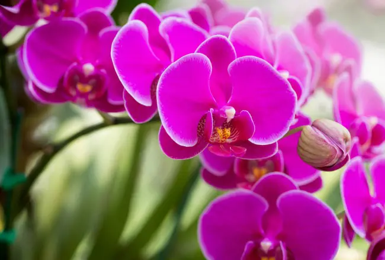
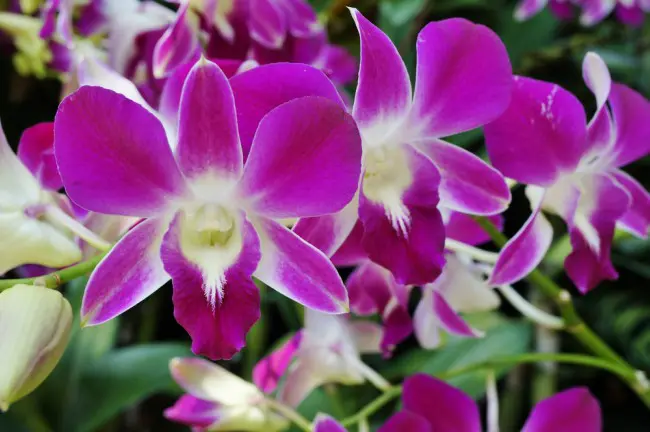
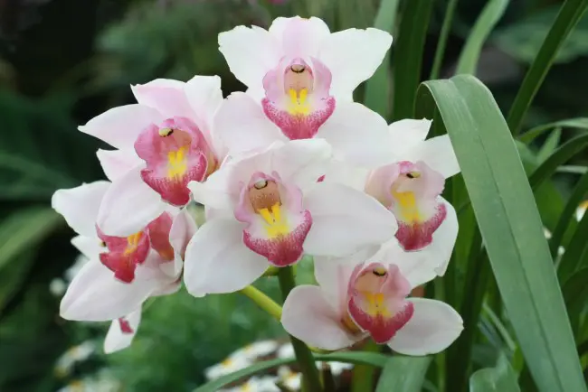

Phalaenopsis

La principal característica de las Phalaenopsis son sus flores en forma de mariposa (que pueden ser de un solo color o combinar distintas tonalidades, y nacen de las varas florales) y sus hojas carnosas (de un color verde intenso).
Ver más
Dendrobium

Las Dendrobium se caracterizan tanto por tener las hojas mucho más estrechas y puntiagudas que las Phalaenopsis como por su distribución (nacen directamente del tallo central). De hecho, es la distribución de hojas la que marca a esta enorme familia en la que podemos encontrar flores de lo más disperso pero con una máxima común: su increíble belleza.
Ver más
Cymbidium

El primer tipo de orquídeas cultivadas en interior por la facilidad de sus cuidados. Más allá de la variedad de sus flores, las Cymbidium son apreciadas porque suelen tener fragancia y, añadido, mantienen su floración durante mucho tiempo. La planta (de hojas perennes) se desarrolla a partir de pseudobulbos, una de las principales características para poder diferenciarlas.
Ver más